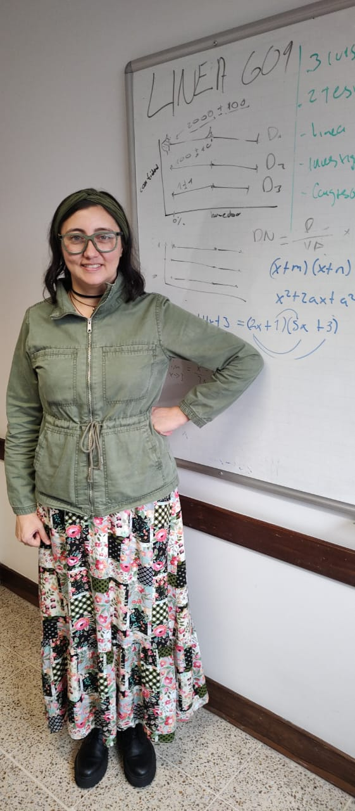

Biviana Marcela Suárez Sierra
Researcher in Statistics and Data Science
Professor, Universidad EAFIT, Medellín, Colombia
Google Scholar • ORCID • GitHub • Email
Research Interests
- Statistical modeling and inference
- Time series analysis and changepoint detection
- Bayesian statistics and information theory
- Educational data science and learning analytics
Publications
A. Journal Articles
- Baumer, B.S. & Suárez-Sierra, B.M. (2025). tidychangepoint: a unified framework for analyzing changepoint detection in univariate time series. arXiv preprint arXiv:2407.14369 [stat.ME]. https://arxiv.org/abs/2407.14369
- Suárez-Sierra, B.M. (2025). Factors Associated with Unit-Specific Failure in a University-Level Statistics Course. arXiv preprint arXiv:2510.915814 [stat.AP]. https://arxiv.org/pdf/2510.20100
- Suárez-Sierra, B.M., Gómez-Montoya, K.M. & Taimal, C.A. (2025). Pollutants exceedances modeling using non-homogeneous poisson processes: a case study for Medellín and Bogotá, 2018-2020. Air Qual Atmos Health (18), 2385–2404. https://doi.org/10.1007/s11869-025-01762-z
- Suárez-Sierra, B. M., Coen, A., & Taimal, C. A. (2023). Genetic algorithm with a Bayesian approach for multiple change-point detection in time series of counting exceedances for specific thresholds. Journal of the Korean Statistical Society, 52(4), 982–1024. https://doi.org/10.1007/s42952-023-00227-2
- Suárez-Sierra, B. M., Rodrigues, E. R., & Tzintzun, G. (2021). An application of a non-homogeneous Poisson model to study PM2.5 exceedances in Mexico City and Bogotá. Journal of Applied Statistics, 49(9), 2430–2445. https://doi.org/10.1080/02664763.2021.1897972
- Suárez-Sierra, B. M., Rodrigues, E. R., & Tzintzun, G. (2019). Rate of ozone and PM10 exceedances: A case study comparing data from Mexico City and Bogotá. Communications in Statistics: Case Studies, Data Analysis and Applications, 5(2), 153–165. https://doi.org/10.1080/23737484.2019.1593066
B. Books
- Tabares, M., Vallejo, P., Suarez, B., Suarez, M., Ruiz, O., & Aguilar, J. (Eds.). (2023). Advances in computing: 17th Colombian Conference on Computing, CCC 2023 , Medellín, Colombia, August 10–11, 2023, revised selected papers. Springer Nature. https://link.springer.com/book/10.1007/978-3-031-47372-2
C. Book Chapters
- Taimal, C. A., Suárez-Sierra, B. M., & Rivera, J. C. (2024). An exploration of genetic algorithms operators for the detection of multiple change-points of exceedances using non-homogeneous Poisson processes and Bayesian methods. In M. Tabares, P. Vallejo, B. Suarez, M. Suarez, O. Ruiz, & J. Aguilar (Eds.), Advances in computing. CCC 2023. Communications in Computer and Information Science (Vol. 1924). Springer, Cham. https://doi.org/10.1007/978-3-031-47372-2_20
- Barajas-Oviedo, S., Suárez-Sierra, B. M., & Ramírez-Ramírez, L. L. (2024). Change point detection for time dependent counts using extended MDL and genetic algorithms. In M. Tabares, P. Vallejo, B. Suarez, M. Suarez, O. Ruiz, & J. Aguilar (Eds.), Advances in computing. CCC 2023. Communications in Computer and Information Science. Springer, Cham. https://link.springer.com/chapter/10.1007/978-3-031-47372-2_19
D. Conference Proceedings
- Baumer, B., & Suárez Sierra, B. M. (2024). tidychangepoint: A unified framework for analyzing changepoint detection in univariate time series. In Joint Statistical Meetings (JSM), Portland, OR. https://zenodo.org/records/13305581
Teaching
2025
-
Inferencia Estadística — undergraduate course using Quarto-based materials.
Course resources:
- Estadística General — course emphasizing conceptual foundations.
Master's Thesis Supervision
- EAFIT University (2025). Implementation of LSTM recurrent neural networks for forecasting PM2.5 particulate matter in the Aburrá Valley. Master's thesis in Data Science and Analytics. Main advisor: Biviana Marcela Suárez-Sierra.
- EAFIT University (2023). Predictive analysis of default risk in microcredit: A machine learning approach in the financial sector. Master's thesis in Data Science and Analytics. Main advisor: Biviana Marcela Suárez-Sierra.
- EAFIT University (2023). Review of Bayesian statistical techniques for entity matching in large data sets. Master's thesis in Data Science and Analytics. Main advisor: Biviana Marcela Suárez-Sierra.
- EAFIT University (2023). Modeling threshold exceedances during dry and wet periods in Colombia using non-homogeneous Poisson processes. Master's thesis in Data Science and Analytics. Main advisor: Biviana Marcela Suárez-Sierra.
- EAFIT University (2022). Genetic algorithm with a Bayesian approach for multiple change-point detection in time series of counting exceedances for specific thresholds. Master's thesis in Applied Mathematics. Main advisor: Biviana Marcela Suárez-Sierra.
- EAFIT University (2022). Prediction of employee turnover using automatic learning models. Master's thesis in Data Science and Analytics. Main advisor: Biviana Marcela Suárez-Sierra.
- Sergio Arboleda University (2021). Study of the correlation of air pollutants in Bogotá. Master's thesis in Applied Mathematics. Main advisor: Biviana Marcela Suárez-Sierra.
- Sergio Arboleda University (2021). Detection of change points in time series with a genetic algorithm for modeling exceedances of air pollutants in Bogotá. Master's thesis in Applied Mathematics. Main advisor: Biviana Marcela Suárez-Sierra.
Conversations with Science
2025
-
Taller de motivación del Teorema de Límite Central, Universidad del Rosario, Bogotá
-
Ciencia en voz alta, pero intermitente. Seminario Internacional de Narrativas EAFIT 2025.
-
Circulos Matemáticos are fun, collaborative problem-solving sessions led by expert mentors that help high-school students discover a passion for mathematics.
Beyond classroom review, they explore advanced and exciting topics that open new perspectives — learn more at circulodematematicaslt.com.
Course resources:
-
R Day Colombia 2025 is a high-impact event for the scientific and business communities, showcasing the versatility of R for statistics and data science; after editions in Medellín (2019 and 2023), it returns in person on November 14, 2025.
We aim to connect Medellín’s R community and welcome newcomers; I am part of the organizing committee. More details
Presentación en R Day 2025
▶ Ver presentación: *Using the GA-Coen Algorithm*
-
Ada Lovelace Day – Medellín is a one-day, Latin America–wide celebration featuring playful workshops for girls ages 10–12 to promote STEM and highlight the vital role of women in science.
We will serve as the official host site in Medellín. More details
Contact
Email: bmasuarezs@eafit.edu.co
Office: Universidad EAFIT, Bloque 19, Medellín, Colombia